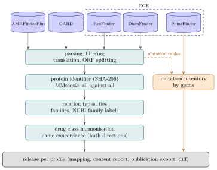
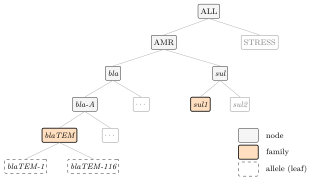
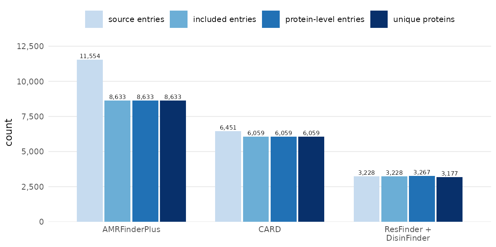
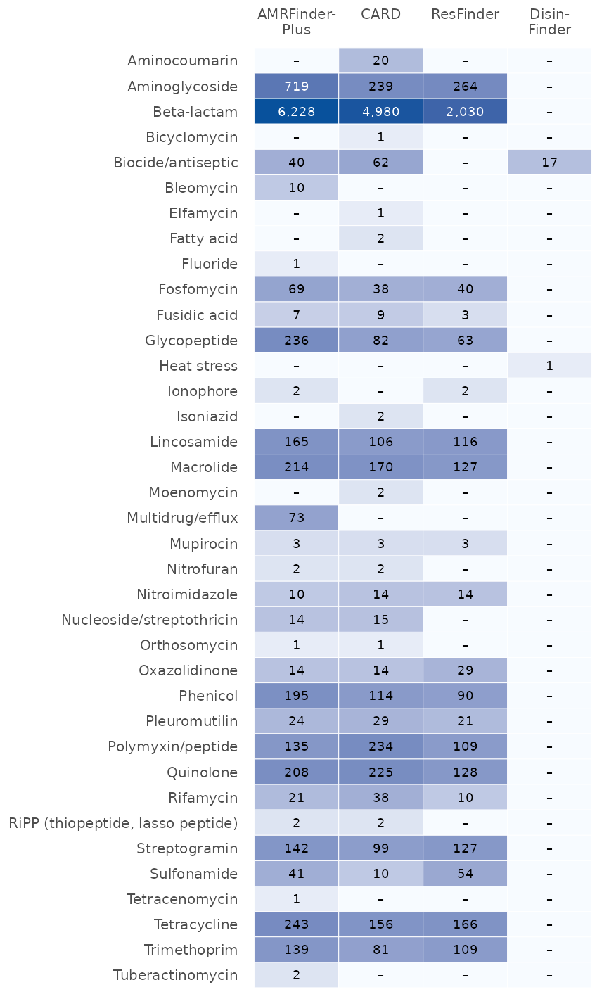
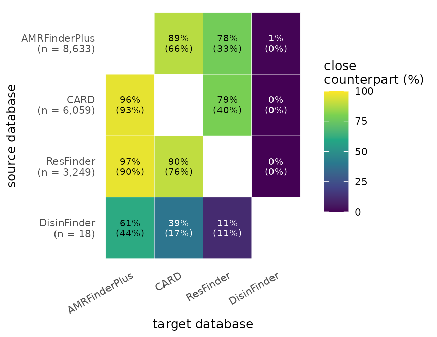
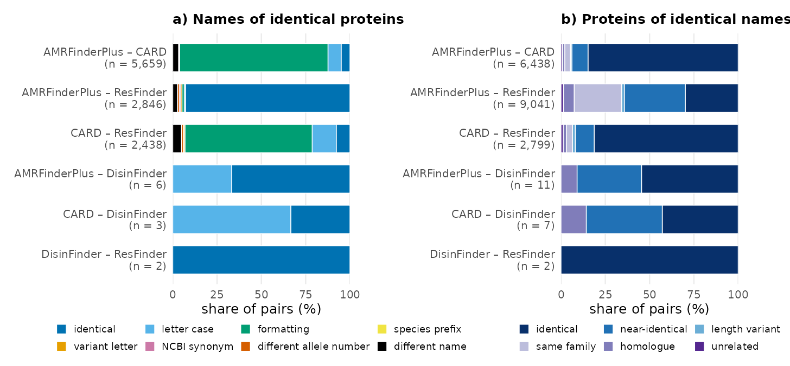
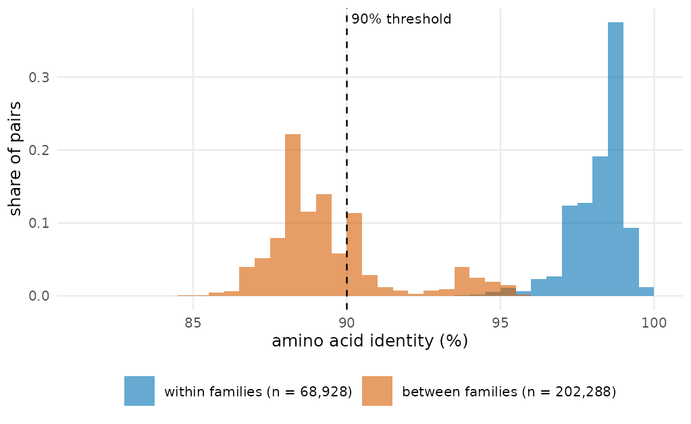
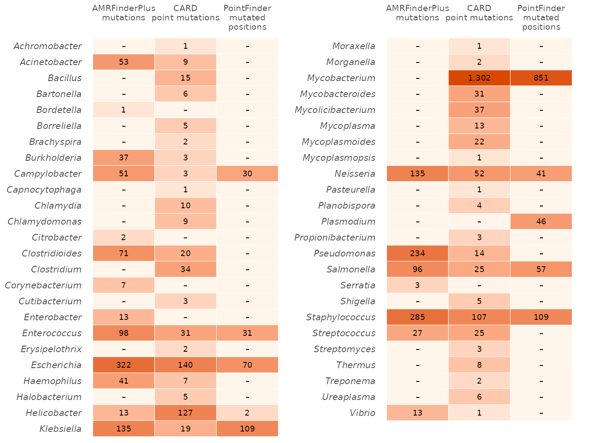
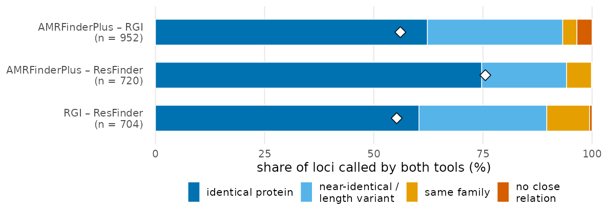

ARGeement
Sequence-based, versioned mapping of antimicrobial resistance gene databases
Latest release 2026-11-16_184628 (profile current, created 2026-11-16 19:20:28 UTC). Source code (GitHub) · Archived releases (Zenodo) · Paper
Download this release: doi:10.5281/zenodo.24300987
Database versions
| Database / tool | Version |
|---|---|
| AMRFinderPlus | 2026-10-29.1 |
| CARD | 4.0.2 |
| DisinFinder | 2.0.1 (git 09fc831) |
| PointFinder | 4.2.0 (git 3bd7d5e) |
| ResFinder | 2.7.0 (git eb6c21a) |
| MMseqs2 | 18.8cc5c |
Content
| Database | Source entries | Protein-level entries | Unique proteins |
|---|---|---|---|
| AMRFinderPlus | 8 633 | 8 633 | 8 633 |
| CARD | 6 059 | 6 059 | 6 059 |
| ResFinder | 3 212 | 3 249 | 3 162 |
| DisinFinder | 16 | 18 | 17 |
Protein-level entries are entries translated as a whole plus the retained open reading frames of entries split into ORFs (operons, reverse-strand genes).
Overlap between databases
| From \ to | AMRFinderPlus | CARD | ResFinder | DisinFinder |
|---|---|---|---|---|
| AMRFinderPlus (n = 8 633) | – | 88.8% | 77.6% | 0.6% |
| CARD (n = 6 059) | 96.1% | – | 79.3% | 0.1% |
| ResFinder (n = 3 249) | 96.5% | 90.0% | – | 0.1% |
| DisinFinder (n = 18) | 61.1% | 38.9% | 11.1% | – |
Share of protein-level entries of the row database that have a close counterpart (identical protein, near-identical or length variant) in the column database.
| Relation type | Directed relations |
|---|---|
| identical protein | 22 102 |
| near-identical | 1 671 070 |
| length variant | 36 708 |
| same family | 318 443 |
| homolog | 36 282 |
Real-genome use case
100 complete RefSeq genomes annotated with AMRFinderPlus, RGI and ResFinder/DisinFinder (BLAST alignments, database versions of this release).
| Tool pair | Shared loci | Locus agreement | Same name | Same or close protein |
|---|---|---|---|---|
| AMRFinderPlus – RGI | 952 | 25.3% | 56.1% | 93.3% |
| AMRFinderPlus – ResFinder | 720 | 60.9% | 75.6% | 94.2% |
| RGI – ResFinder | 704 | 19.0% | 55.3% | 89.6% |
Synthetic validation
5 000 synthetic variants of 500 curated proteins (seed 1): original protein among best hits in 99.6% of cases, relation type correct in 99.5%, number of differences correct in 98.9%.
Figures









Use
Install and run the pipeline as described in the README. Translate a gene list with argeement lookup, search new sequences with argeement query.
Licence
The data are licensed under CC-BY 4.0; the ARGeement software under the MIT licence. Source databases and their terms:
- AMRFinderPlus (NCBI): United States Government Work, public domain; cite Feldgarden et al. 2021 (terms)
- CARD (McMaster University): free for non-commercial research at academic, government and non-profit institutions; commercial organisations need a licence from McMaster University. The Antibiotic Resistance Ontology (ARO) is under CC-BY 4.0 (terms)
- ResFinder, DisinFinder, PointFinder (Center for Genomic Epidemiology, DTU): Apache License 2.0 (terms)
The data contain identifiers and names of the source entries, public sequence accessions, protein lengths, hashes of the sequences, and the relations, families and counts computed by ARGeement. Of CARD they contain only ARO accessions and terms (model names, drug classes, resistance mechanisms), which are part of the CC-BY 4.0 ontology; they contain no CARD sequences, model descriptions or other CARD material. No sequence of any source database is included.
Whoever uses the source databases themselves (sequences, models, detection software) is bound by their terms; in particular, commercial use of CARD requires a licence from McMaster University. This dataset does not grant any right to the source databases.
Citation
If you use ARGeement, please cite:
Vesna Vujić, Georgina Helyes, Adrienn Gréta Tóth, István Csabai, Norbert Solymosi. ARGeement: sequence-based, versioned mapping of antimicrobial resistance gene databases. bioRxiv 2026.11.17.767227; doi: https://doi.org/10.64898/2026.11.17.767227
Please also cite the release you used; this release: doi:10.5281/zenodo.24300987.